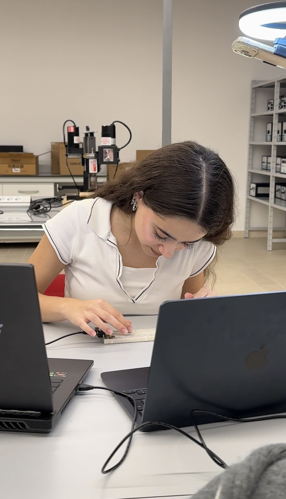

Project 1 · SITE 1101
Logic Gates on Breadboard
I built a NOT gate circuit on a breadboard and checked its output against the input to verify that the circuit inverted the signal as expected.
SITE 1101 coursework
A few hands-on projects from my first year, where I’ve been learning by building, experimenting, and sharing what I discover.

Project 1 · SITE 1101
I built a NOT gate circuit on a breadboard and checked its output against the input to verify that the circuit inverted the signal as expected.
Project 2 · SITE 1101
I introduced students to basic coding concepts through beginner-friendly activities, helping make programming approachable and fun.
Project 3 · SITE 1101
I assembled and programmed a robot, bringing hardware and code together to make it carry out basic actions.